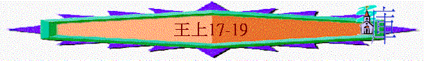

|
屬神國度的衰落 |
|||
|
二王—行神的旨意得堅固
|
二國—不專心順服終分裂
|
二先知—神能力彰顯仍剛硬
|
二結局—繼續行惡至終亡國
|
|
王上1-10 |
王上11-16 |
王上17-王下9:4 |
王下9:5-25:30 |
三.二先知----神能力彰顯仍剛硬(王上17-王下9:4)
～列王紀上下在記載王歷史裏，突然加插了兩段先知的歷史
～用意是帶出以色列國雖有如以利亞及以利沙大能的先知，但王與百姓仍硬心不悔改，不遵行神的話
1.以利亞先知(17-22)
A.他的能力
「他必有以利亞的心志能力，行在主的前面，叫為父的心轉向兒女，叫悖逆的人轉從義人的智慧，又為主預備合用的百姓。」」路1:17
～強調以利亞的能力，他的能力是甚麼？
a.禱告的能力
(1)不禱告不降雨
(A)管教的來臨
「基列寄居的提斯比人以利亞對亞哈說：「我指著所事奉永生耶和華以色列的神起誓，這幾年我若不禱告，必不降露，不下雨。」耶和華的話臨到以利亞說：」17:1-2
～亞哈及以色列國是敬拜巴力的，迦南人相信巴力是暴風雨之神，能為農作物帶來甘霖
～所以以利亞在亞哈面前帶出他若不禱告，必不下雨，可能藉此管教百姓拜偶像尋求風雨，也證明神才是真正掌管風雨的神！
(B)禱告的力量
「以利亞與我們是一樣性情的人，他懇切禱告，求不要下雨，雨就三年零六個月不下在地上。」雅
5:17
～以利亞懇切禱告，求不要下雨，雨就三年零六個月不下雨
～除非以利亞再禱告，雨才會降下
(C)信心的承諾
～以利亞也有信心，可以在神面前起誓一定不降雨的
(2)不降雨神供養
(A)人的聽命
「「你離開這裡往東去，藏在約但河東邊的基立溪旁。你要喝那溪裡的水，我已吩咐烏鴉在那裡供養你。」於是以利亞照著耶和華的話，去住在約但河東的基立溪旁。」17:3-5
～神吩咐以利亞藏在基立溪旁，等候祂的供養
～以利亞就聽神的話去了
(B)神的預備
「烏鴉早晚給他叼餅和肉來，他也喝那溪裡的水。」17:6
(C)他的信心
「過了些日子，溪水就乾了，因為雨沒有下在地上。」17:7
(a)從未有烏鴉可叼餅與肉予人→他仍信神的話
(b)不知是否每日有烏雅叼食物→他仍每天仰望
(c)每日先知眼見溪水快要乾了→他仍等候吩咐
b.供應的能力
(1)現實的困境
(A)溪水乾了
(B)全地飢荒
(2)真神的預備
「耶和華的話臨到他說：「你起身往西頓的撒勒法（撒勒法與路加福音四章二十六節同）去，住在那裡；我已吩咐那裡的一個寡婦供養你。」以利亞就起身往撒勒法去。到了城門，見有一個寡婦在那裡撿柴，以利亞呼叫他說：「求你用器皿取點水來給我喝。」」17:8-10
～「撒勒法」是腓利基的城巿，位於西頓以南約
～神在此城中預備一寡婦供養先知
(3)足夠的供應
「他說：「我指著永生耶和華你的神起誓，我沒有餅，罈內只有一把麵，瓶裡只有一點油；我現在找兩根柴，回家要為我和我兒子做餅；我們吃了，死就死吧！」以利亞對他說：「不要懼怕！可以照你所說的去做吧！只要先為我做一個小餅拿來給我，然後為你和你的兒子做餅。因為耶和華以色列的神如此說：罈內的麵必不減少，瓶裡的油必不缺短，直到耶和華使雨降在地上的日子。」婦人就照以利亞的話去行。他和他家中的人，並以利亞，吃了許多日子。罈內的麵果不減少，瓶裡的油也不缺短，正如耶和華藉以利亞所說的話。」17:12-16
c.復活的能力
(1)婦人兒子的死亡
「這事以後，作那家主母的婦人，他兒子病了；病得甚重，以致身無氣息。」17:17
(2)懇切信心的呼求
「以利亞對他說：「把你兒子交給我。」以利亞就從婦人懷中將孩子接過來，抱到他所住的樓中，放在自己的床上，就求告耶和華說：「耶和華我的神啊，我寄居在這寡婦的家裡，你就降禍與他，使他的兒子死了嗎？」以利亞三次伏在孩子的身上，求告耶和華說：「耶和華我的神啊，求你使這孩子的靈魂仍入他的身體！」」17:19-21
(3)死人復活的奇蹟
「耶和華應允以利亞的話，孩子的靈魂仍入他的身體，他就活了。以利亞將孩子從樓上抱下來，進屋子交給他母親，說：「看哪，你的兒子活了！」」17:22-23
(4)神人話語的印證
「婦人對以利亞說：「現在我知道你是神人，耶和華藉你口所說的話是真的。」」17:24
B.他的得勝
a.勇敢面對亞哈王
(1)勇敢面對以色列王
「以利亞就去，要使亞哈得見他。那時，撒瑪利亞有大饑荒；」18:2
～亞哈及他的妻耶洗別曾殺耶和華眾先知，但他仍照神的話，在沒降雨後3年見亞哈
(2)另外敬神的俄巴底
～亞哈與他的家宰俄巴底尋找水源，而聖經說俄巴底是敬畏神
(A)相信真神
「亞哈將他的家宰俄巴底召了來。（俄巴底甚是敬畏耶和華，」18:3
～在以色列中，眾百姓及王也拜神，但俄巴底雖然是王的家宰，但他仍敬信耶和華才是真神
(B)保護先知
「耶洗別殺耶和華眾先知的時候，俄巴底將一百個先知藏了，每五十人藏在一個洞裡，拿餅和水供養他們。）」18:4
(C)遇見神僕
「俄巴底在路上恰與以利亞相遇，俄巴底認出他來，就俯伏在地，說：「你是我主以利亞不是？」回答說：「是。你去告訴你主人說，以利亞在這裡。」」18:7-8
(D)相信神蹟
「現在你說，要去告訴你主人說，以利亞在這裡；恐怕我一離開你，耶和華的靈就提你到我所不知道的地方去。這樣，我去告訴亞哈，他若找不著你，就必殺我；僕人卻是自幼敬畏耶和華的。」18:11-12
(3)放膽責備亞哈全家
「於是俄巴底去迎著亞哈，告訴他；亞哈就去迎著以利亞。亞哈見了以利亞，便說：「使以色列遭災的就是你嗎？」以利亞說：「使以色列遭災的不是我，乃是你和你父家；因為你們離棄耶和華的誡命，去隨從巴力。」18:16-18
b.靠主得勝假先知
(1)勇敢招聚
「現在你當差遣人，招聚以色列眾人和事奉巴力的那四百五十個先知，並耶洗別所供養事奉亞舍拉的那四百個先知，使他們都上迦密山去見我。」亞哈就差遣人招聚以色列眾人和先知都上迦密山。」18:19-20
(2)呼籲回轉
「以利亞前來對眾民說：「你們心持兩意要到幾時呢？若耶和華是神，就當順從耶和華；若巴力是神，就當順從巴力。」眾民一言不答。以利亞對眾民說：「作耶和華先知的只剩下我一個人；巴力的先知卻有四百五十個人。當給我們兩隻牛犢，巴力的先知可以挑選一隻，切成塊子，放在柴上，不要點火；我也預備一隻牛犢放在柴上，也不點火。你們求告你們神的名，我也求告耶和華的名。那降火顯應的神，就是神。」眾民回答說：「這話甚好。」」18:21-24
～他用天火降臨那邊祭牲的驗証，來証明神是真神，也是呼籲百姓回轉，勿心持兩意的又拜真神，又祠偶像
(3)至終得勝
(A)假先知的失敗
(a)人多不能成何事
「現在你當差遣人，招聚以色列眾人和事奉巴力的那四百五十個先知，並耶洗別所供養事奉亞舍拉的那四百個先知，使他們都上迦密山去見我。」」18:19
「以利亞對巴力的先知說：「你們既是人多，當先挑選一隻牛犢，預備好了，就求告你們神的名，卻不要點火。」」18:25
(b)偶像不能聽呼求
「他們將所得的牛犢預備好了，從早晨到午間，求告巴力的名說：「巴力啊，求你應允我們！」卻沒有聲音，沒有應允的。他們在所築的壇四圍踊跳。」18:26
(c)盡力至終也徒然
「他們大聲求告，按著他們的規矩，用刀槍自割、自刺，直到身體流血。從午後直到獻晚祭的時候，他們狂呼亂叫，卻沒有聲音，沒有應允的，也沒有理會的。」18:28-29
～用力槍自割自刺和狂呼亂叫乃是拜巴力的儀式
(B)以利亞的得勝
(a)證明耶和華是真神
＊超越環境的神蹟
「以利亞照雅各子孫支派的數目，取了十二塊石頭（耶和華的話曾臨到雅各說：「你的名要叫以色列」），用這些石頭為耶和華的名築一座壇，在壇的四圍挖溝，可容穀種二細亞，又在壇上擺好了柴，把牛犢切成塊子放在柴上，對眾人說：「你們用四個桶盛滿水，倒在燔祭和柴上」；又說：「倒第二次。」他們就倒第二次；又說：「倒第三次。」他們就倒第三次。水流在壇的四圍，溝裡也滿了水。」18:31-35
～二細亞約
～但天火降臨竟可燒盡祭牲及燒乾溝裡的水，明顯不是人能做到的，是真神施下超越環境的神蹟
＊時間剛好的燃燒
「到了獻晚祭的時候，先知以利亞近前來，說：「亞伯拉罕、以撒、以色列的神，耶和華啊，求你今日使人知道你是以色列的神，也知道我是你的僕人，又是奉你的命行這一切事。」18:36
～到獻晚祭時，就有火從天降臨，降火時間十分配合獻祭時間，而獻晚祭的時間約是下午三時
＊不從人來的降下
「於是，耶和華降下火來，燒盡燔祭、木柴、石頭、塵土，又燒乾溝裡的水。」18:38
～是從天降下，不是從人而來
＊假神不能的作為
＊印證真神的方法
(b)令百姓的心可回轉
「眾民看見了，就俯伏在地，說：「耶和華是神！耶和華是神！」」18:39
(c)徹底除掉巴力先知
「以利亞對他們說：「拿住巴力的先知，不容一人逃脫！」眾人就拿住他們。以利亞帶他們到基順河邊，在那裡殺了他們。」18:40
c.以信得允雨降臨
(1)信心的宣告
「以利亞對亞哈說：「你現在可以上去吃喝，因為有多雨的響聲了。」」18:41
(2)信心的跪禱
「對僕人說：「你上去，向海觀看。」僕人就上去觀看，說：「沒有什麼。」他說：「你再去觀看。」如此七次。」18:43
(3)信心的看見
(A)不因六次沒雲而失去信心
「對僕人說：「你上去，向海觀看。」僕人就上去觀看，說：「沒有什麼。」他說：「你再去觀看。」如此七次。」18:43
(B)不因只得小雲而失去信心
「第七次僕人說：「我看見有一小片雲從海裡上來，不過如人手那樣大。」以利亞說：「你上去告訴亞哈，當套車下去，免得被雨阻擋。」」18:44
(4)信心的印證
「霎時間，天因風雲黑暗，降下大雨。亞哈就坐車往耶斯列去了。」18:45
(5)得力的奔跑
C.人的軟弱
a.王室的軟弱
「亞哈將以利亞一切所行的和他用刀殺眾先知的事都告訴耶洗別。耶洗別就差遣人去見以利亞，告訴他說：「明日約在這時候，我若不使你的性命像那些人的性命一樣，願神明重重的降罰與我。」」19:1-2
(1)仍不悔改
～見到天火降臨，見到假先知被殺，亞哈及耶洗別仍不悔改
(2)仍不相信
～見到假神的不能，仍不相信歸向獨一的真神—耶和華
(3)仍要敵擋
～見到假先知的被殺，仍然要敵擋真正的先知—以利亞，要尋索他的命
b.先知的軟弱
(1)逃命----失去勇敢
「以利亞見這光景就起來逃命，到了猶大的別是巴，將僕人留在那裡，」19:3
～「見這光景」有古卷作害怕，別是巴位於猶大南部，離迦密山約
～先知聽了耶洗別的追殺令，即失去先前勇敢的心，逃命至猶大地去
(2)離開----失去使命
～他離開他事奉之地—以色列，至猶大地，忘記自己是以色列先知的使命
(3)求死----失去成就
「自己在曠野走了一日的路程，來到一棵羅騰樹下（羅騰，小樹名，松類；下同），就坐在那裡求死，說：「耶和華啊，罷了！求你取我的性命，因為我不勝於我的列祖。」」19:4
～他向神求死，因為他自覺不勝於列祖，他可能一直以為他行如此神蹟，會令王及以色列人回轉，得到一定成就，但現在他覺不如列祖，列祖也能令人回轉，自己反被選民追殺！
(4)躺下----失去力量
「他就躺在羅騰樹下，睡著了。有一個天使拍他，說：「起來吃吧！」」19:5
～他之前很有力量，朿上腰，奔在亞哈前面，但現在已失去力量，躺在羅騰樹下睡著
(5)埋怨----失去熱誠
「他說：「我為耶和華萬軍之神大發熱心；因為以色列人背棄了你的約，壞了你的壇，用刀殺了你的先知，只剩下我一個人，他們還要尋索我的命。」」19:10
～他之前為神大發熱心，覺單是他一人，他仍持守神的使命與心志，但現在為何這樣，他開始埋怨，失去了當初事主的熱誠
c.起來的方法
(1)神的體裇
「他就躺在羅騰樹下，睡著了。有一個天使拍他，說：「起來吃吧！」他觀看，見頭旁有一瓶水與炭火燒的餅，他就吃了喝了，仍然躺下。」19:5-6
～神沒有責備他求死，反而體裇他，為他預備水與餅
(2)人的休息
「他觀看，見頭旁有一瓶水與炭火燒的餅，他就吃了喝了，仍然躺下。耶和華的使者第二次來拍他，說：「起來吃吧！因為你當走的路甚遠。」他就起來吃了喝了，仗著這飲食的力，走了四十晝夜，到了神的山，就是何烈山。」19:6-8
～神給他休息及吃息機會，使他有力量走前面的路
(3)神的話語
「他在那裡進了一個洞，就住在洞中。耶和華的話臨到他說：「以利亞啊，你在這裡做什麼？」」19:9
～神的話重新臨到以利亞身上
(4)對神認識
「耶和華說：「你出來站在山上，在我面前。」那時耶和華從那裡經過，在他面前有烈風大作，崩山碎石，耶和華卻不在風中；風後地震，耶和華卻不在其中；地震後有火，耶和華也不在火中；火後有微小的聲音。以利亞聽見，就用外衣蒙上臉，出來站在洞口。有聲音向他說：「以利亞啊，你在這裡做什麼？」」19:11-13
(A)神的掌管
～神可以掌管風、地、火，人當在祂面前順服
(B)神的威榮
～有地震、有烈風、有火，顯出神的威榮，以利亞也要用外衣蒙臉，亞哈王也算不得甚麼！
(C)神的奧秘
～神不在風中，不在火中，用人的眼及思想怎能測透神奇妙的作為！
(D)神的實在
～但神仍然是在以利亞面前，沒有丟棄他的
(E)神的溫柔
～神不用雷聲般對軟弱的以利亞說話，是用微小的聲音引導他思想前面的路
(F)神的關注
～人所關注單是自己的軟弱，自己的失敗，但神所重視的是「你在這裏作甚麼？」為何如此軟弱，為何不起來！
(G)神有工作
「但我在以色列人中為自己留下七千人，是未曾向巴力屈膝的，未曾與巴力親嘴的。」19:18
～神不是單剩下以利亞一個人，神是有工作的，仍為自己留下七千人未曾向巴力屈膝的人
(5)認清使命
(A)膏哈薛作王
「耶和華對他說：「你回去，從曠野往大馬色去。到了那裡，就要膏哈薛作亞蘭王，」19:15
(B)膏耶戶作王
「又膏寧示的孫子耶戶作以色列王，並膏亞伯米何拉人沙法的兒子以利沙作先知接續你。」19:16
(C)膏以利沙
「將來躲避哈薛之刀的，必被耶戶所殺；躲避耶戶之刀的，必被以利沙所殺。」19:17
～神要興起以利沙接續以利亞，而膏的意思有分別出來之意
～神要藉著他們清除亞哈家和巴力的勢力
～「將來躱避哈薛之刀的，必被耶戶所殺」--應指亞哈之家被耶戶所殺
(6)人的起來
(A)離開軟弱之地
「於是，以利亞離開那裡走了，遇見沙法的兒子以利沙耕地；在他前頭有十二對牛，自己趕著第十二對。以利亞到他那裡去，將自己的外衣搭在他身上。」19:19
(B)完成神的托負----建立以利沙
「以利沙就離開牛，跑到以利亞那裡，說：「求你容我先與父母親嘴，然後我便跟隨你。」以利亞對他說：「你回去吧，我向你做了什麼呢？」以利沙就離開他回去，宰了一對牛，用套牛的器具煮肉給民吃，隨後就起身跟隨以利亞，服事他。」19:20-21